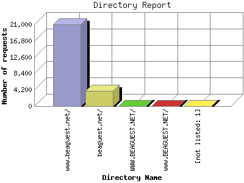

The Directory Report analyzes accesses to this web site's directories. This information can be useful in determining the most requested areas.
This report shows results with at least 0.010000 percent of the total bytes. This report is sorted by amount of bytes transferred.

| Directory Name | Number of requests | Percentage of the bytes | |
|---|---|---|---|
| 1. | www.beaguest.net/ | 20,935 | 83.59% |
| 2. | beaguest.net/ | 3,981 | 16.32% |
| 3. | WWW.BEAGUEST.NET/ | 11 | 0.07% |
| 4. | www.BEAGUEST.NET/ | 2 | 0.01% |
| [not listed: 1] | 1 | 0.01% | |
This report was generated on January 9, 2009 16:38.
Report time frame July 11, 2008 00:18 to January 1, 2009 04:01.
| Web statistics report produced by: analog 6.0 / Report Magic 2.21 |